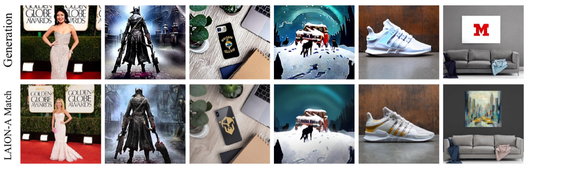

Copyright, Consent &
Data Provenance
Who owns the data a model learns from?
Albert No · Yonsei University
Trustworthy AI · 2026
Contents
Where Training Data Comes From
Scraped at scale, consent rarely asked
The Appetite for Data
A large model trains on trillions of words and images.
- Web pages, forums, comments
- Books and news articles
- Photos, artwork, source code
Almost all of it was made by someone.
Most of It Is Scraped
A scraper copies the public web page by page.
- Crawl links, download text and images
- Pack into a single training corpus
- Common Crawl: a giant public web snapshot
Common Crawl = an open archive of crawled web pages.
The Big Datasets
A few corpora feed many models.
Web text
Crawled pages, cleaned and filtered.
Books
Large book collections, some pirated.
Images
Billions of captioned web images.
LAION (a public web-scraped image dataset) trained many image models.
The Provenance Chain
Every model output traces back through a supply chain.
Consent Is Rarely Asked
Few creators were ever asked permission.
- Public online does not mean free to copy
- A blog post still carries its author's rights
- Scraping skips the conversation entirely
Visible to all is not the same as licensed for all.
Copyright in One Slide
Copyright
A legal right that lets a creator control copying of their original work.
It attaches automatically the moment the work is fixed: written, recorded, or saved.
Whose Rights Are in Play
Many parties hold a stake in one image.
- The artist who drew it
- The photographer who shot it
- The site that hosts it
One scrape can touch all of them at once.
Memorization to Infringement
When output looks like the input
Models Memorize
Training does not always blur the data into patterns.
- Some examples survive nearly word for word
- Repeated or rare text sticks the most
- The right prompt can pull it back out
The Infringement Chain
Memorization links the training set to the output.
Regurgitation turns a hidden copy into a visible one.
Images Copy Too
Image generators can reproduce training pictures.
- A prompt can summon a near-exact match
- Sometimes a recognizable logo or artwork

Style Versus Copy
Learning a style
General patterns of color, line, tone. Usually not protected.
Copying a work
A specific image or passage reproduced. This is the risk.
The hard cases sit in the blurry middle.
How Often It Happens
Verbatim copying is rare but real.
- Most outputs are genuinely new
- A small fraction reproduce training data
- Rare at scale still means many cases
One leaked passage can anchor a lawsuit.
The Lawsuits
Publishers, artists, and authors sue
The Courtroom Opens
From 2022 onward, the questions moved into court.
- Publishers, artists, and authors filed suits
- Targets: model builders and data hosts
- Most cases are still ongoing
An open debate, not settled law.
New York Times v. OpenAI
Filed in 2023: a major newspaper sues over training and output.
- Complaint showed near-verbatim article text
- The model echoed paywalled paragraphs
- Memorization became a courtroom exhibit
Framed as ongoing litigation, not a verdict.
Getty v. Stability AI
A stock-image company sues an image generator.
- Claim: millions of photos used without a license
- Outputs sometimes showed a garbled watermark
- Cases filed in both the US and the UK
The watermark hinted at the source.
The Authors' Class Actions
Novelists and writers sue over books in the data.
- Allegation: training on pirated book collections
- Many authors joined as a class
- Named writers among the plaintiffs
Books are dense, original, and easy to trace.
Code Joins the Fight
Programmers sue over a coding assistant.
- Public code carries open-source licenses
- Those licenses demand credit and terms
- Claim: suggestions dropped the attribution
Even free code comes with conditions.
What the Suits Share
Different plaintiffs, one shape of complaint.
Input
My work was copied to train.
Output
The model reproduces my work.
Harm
It competes with what I sell.
The defense usually answers: fair use.
The Fair-Use Debate
Transformative use versus market harm
What Is Fair Use
Fair use
A US rule that permits some copying without permission, judged case by case.
It is a defense a court weighs, not a box you check in advance.
The Four Factors
US courts weigh four questions together.
The Transformative Argument
The builder's case: training is transformative.
- The model learns patterns, not copies
- A new tool, a new purpose
- Like a student reading then writing
A contested analogy, not a settled rule.
The Market-Harm Argument
The creator's case: the model competes with me.
- It floods my market with substitutes
- It was built on my unpaid work
- The fourth factor weighs this harm
Market harm is often the decisive factor.
Other Jurisdictions
Fair use is a US doctrine. Other places differ.
- EU: a text-and-data-mining exception, with opt-out
- Japan: a broad training allowance
- UK: still debating its own rules
Where you train can change what is allowed.
No Bright Line Yet
The honest answer to "is training legal?"
It depends. On the data, the output, the market, and the court.
An open question that courts are deciding now.
Consent, Opt-Out & Licensing
Provenance and attribution
Three Ways to Get Consent
Paths from "just scrape it" toward permission.
Opt-out
Take it unless told no.
Opt-in
Take it only if told yes.
License
Pay for clear permission.
Each shifts the burden differently.
The Opt-Out Flow
A site can signal "do not train" to crawlers.
robots.txt is a request, not a lock.
Opt-Out Has Limits
Telling crawlers "no" only goes so far.
- It cannot undo data already collected
- Not every crawler honors the rule
- Most people never knew to opt out
Default-yes puts the work on the creator.
Licensed Data Deals
A cleaner path: pay for the data.
- Model builders sign deals with publishers
- News archives, photo libraries, forums
- A licensing market is forming fast
Clear permission, at a price.
Data Provenance
Provenance
A record of where each piece of data came from and how it may be used.
Knowing the source is the first step to honoring the rights.
Attribution and Credit
Provenance enables credit to flow back.
- Track which sources shaped an output
- Name them, or pay them, when used
- Hard at billions of training examples
An active research and policy problem.
A Consent Demo
Demo
- Read a site's robots.txt for AI rules
- Search a dataset for your own work
- Toggle opt-out and re-check coverage
See consent as a switch you can flip.
Frontier 2025-26
Rulings, markets, open questions
Courts Start to Rule
Early decisions are arriving, and they split.
- Some training looks fair-use friendly
- Pirated sources draw sharper scrutiny
- Output that copies still raises liability
A moving target, decided case by case.
Licensing Markets Grow
Paying for data is becoming standard practice.
- Big publisher and platform deals
- Marketplaces for training-ready data
- Opt-in datasets as a selling point
Consent is turning into a business model.
Provenance Standards
New tools try to label data and outputs.
- Content credentials tag where media came from
- Dataset cards document sources and licenses
- Regulators push for training transparency
Provenance is becoming infrastructure.
Open Questions
- Is training fair use, or not?
- Who gets paid, and how?
- Can consent scale to the whole web?
- How do we prove a source was honored?
The debate is wide open.
Key Takeaways
- Training data is people's copyrighted work
- Memorization can link training to output
- Fair use is contested, not settled
- Consent, licensing, provenance are the fixes
Provenance is the thread tying data to rights.
Who owns the data a model learns from?